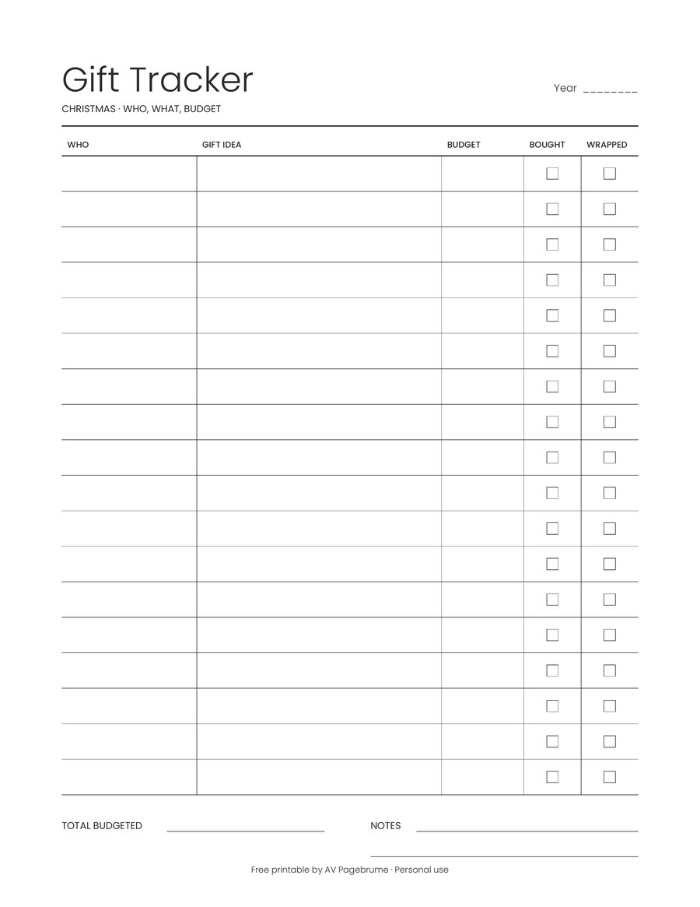
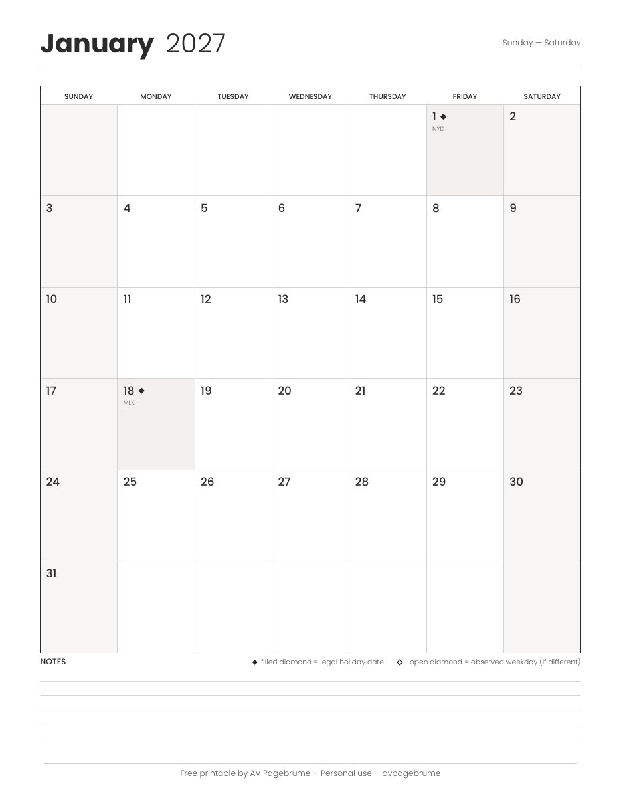
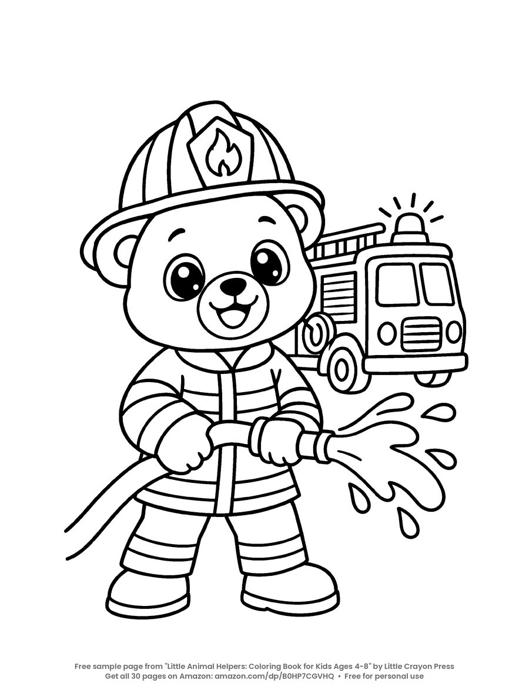

Max carries a letter that matters, and the page tells you why.
Color MaxLittle Animal Helpers
A story on every page
Little Animal Helpers is a coloring storybook for kids ages 4-8. Most coloring books are pictures alone. This one has a story on every page. Max the Puppy carries the mail, Coco the Cat bakes, Freya the Fox teaches, and Bruno the Bear keeps watch.
A screen-free gift from Thanksgiving through Christmas.

Meet the helpers
Four friends, four jobs
Each page tells what the helper does, then leaves the coloring to the child. Point or tap a friend to read what they do.
Coco bakes something sweet to share, and the page shows the kitchen.
Color CocoFreya keeps a seat for a new friend, and the page tells that story.
Color FreyaBruno looks after the neighborhood, and the page shows how.
Color BrunoFree to print
A calendar, a list, and pages to color
The 2027 calendar and the gift tracker are planners for a desk. The coloring pages are for kids, any day of the year. No sign-up.
Planner
Christmas gift tracker
A two-page list for who, the idea, the budget, and whether it is bought and wrapped.

Open the trackerPlanner
2027 calendar
A minimal US Letter calendar: year at a glance, twelve monthly grids, and US federal holidays.

Open the calendarColoring page
Bruno's coloring page
Bruno the Bear is the firefighter. Color his page in the browser, or print it.

Coloring pages
Kindness coloring pages
Five short stories about kind acts, with a page to color for each one. Free any day, not only on a holiday.